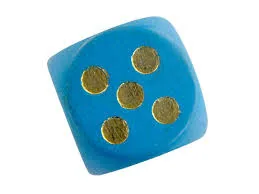
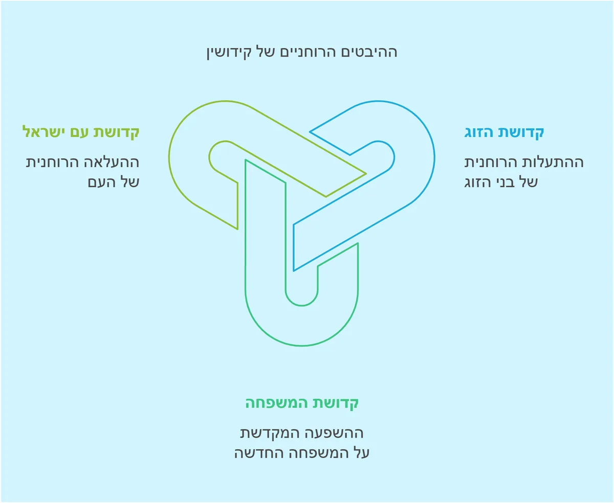
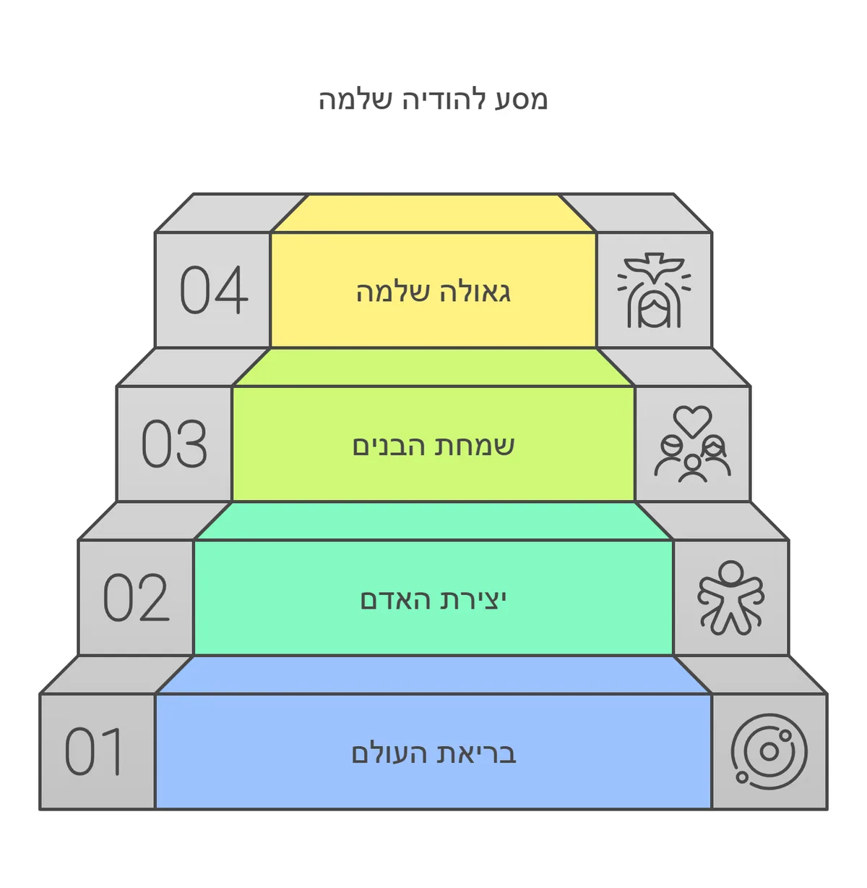
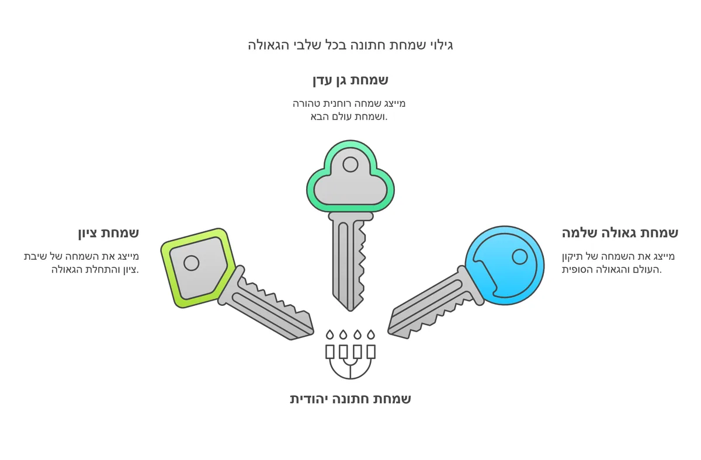
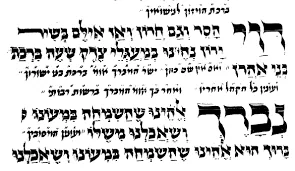
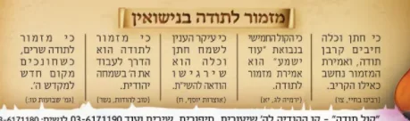

בעמוד זה (23)
רעיונות נפלאים להודיה בחתונה
ראון כאן בהרחבה או כאן בקובץ הקול החמישי - להכניס את ההודיה לחתונה.pdf
השיר - לכבוד החתן בחור מעם
מקהלות עם / ר' מרדכי עבאדי מַקְהֵלוֹת עַם בָּרְכוּ אֵל הָרִימוּ קוֹל כֹּחַ וָאֵל יָגֵל יַעֲקֹב יִשְׂמַח יִשְׂר…

סיבת השמחה הגדולה
השיר - שמח תשמח רעים אהובים בס"ד מהגאון ר' שלמה זלמן אויערבך זצ''ל טעם החיוב לשמח חתן וכלה חז"ל הפליגו מאד בחי…
מקדש עמו ישראל - על ידי חופה וקידושין
ישיש עליך אלוקיך - כמשוש חתן על כלה ההבדל בין קדושת התורה לתפיסת אומות העולם שתי גישות מנוגדות לקדושה תפיסת או…
קדושת הכלל: עומק מיוחד בברכת האירוסין
השיר ידיד נפש קדושת הכלל: עומק מיוחד בברכת האירוסין בואו נתבונן יחד בעומק מופלא הטמון בברכת "אשר קדשנו במצוותי…

שמחת בית השואבה - ושמחת חתן וכלה
שמחם בבנין שלם או אדיר הוא יבנה ביתו בקרוב העומק הפנימי בשמחת המצווה: בין בית השואבה לחתן וכלה שורש השמחה: גיל…
המטרה הפנימית של שבע ברכות - הודיה
שיר - כי הרבית העומק הנפלא בהודיה: המבט הפנימי על שבע ברכות בואו נתבונן יחד בסוד עמוק ומופלא הטמון בתקנת חז"ל …

ברית היהדות - נישואין
ישיש עליך אלוקיך עומק הנישואין: מבט על ברית האהבה בין השי"ת וכנסת ישראל בואו נתבונן יחד בעומק מופלא הטמון במהו…

עומק הקדושה בקידושין
השיר אנא בכוח עומק הקדושה בקידושין: בין קידוש ה' למעילה בקודש הנה דבר מופלא מתגלה לנו בלשון הקודש שבחרו חז"ל. …

העומק הנפלא בשם "קידושין": מבט פנימי על קדושת הנישואין
שיר ידיד נפש - אברהם פריד העומק הנפלא בשם "קידושין": מבט פנימי על קדושת הנישואין יסוד נפלא מתגלה לנו בבחירת חז…

מבראשית עד אחרית
השיר - כי לא תמו חסדיך העומק הנפלא בשבע ברכות: מבראשית עד אחרית יסוד מופלא מתגלה בתקנת חז"ל של שבע ברכות, המאי…
באור השבע ברכות - בקצרה
ברכת הבריאה, וברכות השמחה שאלות חלק את שש ברכות הנישואין (מלבד הגפן) לשתי קבוצות ? מדוע תקנו חז''ל להודות על ב…

סולם השמחה
שמח תשמח העומק הנפלא בהודיה על רגשות הקודש: מבט פנימי על השמחה האלוקית הבה נתבונן יחד בסוד עמוק ומופלא: מדוע ד…
תעלומת הקול החמישי
מהי תעלומת הקול החמישי בשבע הברכות? או מדוע גנבו את קול תודה מהחתונה? מה מתרץ המהרש''א בקיצור? הוכח מתירוץ המה…

שני חלקי הודיה על נס
שני חלקים בשבע ברכות ובקול החמישי שאלות אדם שקרה לו נס או חסד ה' , באלו שני דברים הוא חייב? ומנין? היכן שני חל…
ברכת שהשמחה במעונו
ענינה ומהותה שאלות שהשמחה במעונו. היכן נמצא המעון של ה'? ומי נמצא שם? בוזאת הברכה אומרים "מענה אלוקי קדם" מדוע…
הלכות שבע ברכות
שאלות מי חייב בשבע ברכות: החתן, הכלה, או המסובים? מדוע בעלי השמחה צריכים להשתדל שלא להאריך בסעודה? כמה אנשים צ…

דוי הסר
באורו והלכותיו שאלות חתן וכלה הם דוגמת חתן וכלה שלמעלה . הסבר! איזה נפ''מ למעשה יש מזה? הסבר לפי זה מדוע תקנו …
חמשה קולות במתן תורה ובנישואין
הקול החמישי - בחתונה הקול החמישי במתן תורה הקול החמישי במתן תורה הקשר בין מתן תורה לנישואין אמרו חז''ל (גמ' בר…
הכוס החמישית
הלשון החמישית בגאולת מצרים שמות פרק ו (ו) לָכֵן אֱמֹר לִבְנֵי יִשְׂרָאֵל אֲנִי יְדֹוָד וְהוֹצֵאתִי אֶתְכֶם מִת…
להחזיר את השפע
כתב הרב פינקוס בספרו שבת מלכתא (על תפילת 'אתה אחד'): כל שפע היוצא מאת הקב"ה נקרא חסד. ואמנם כלל גדול הוא בלי י…

מזמור לתודה בחתונה
טעם ראשון מזמור לתודה יש לאומרה בנגינה, שכל השירות עתידות ליבטל חוץ ממזמור לתודה. (שולחן ערוך סימן נא סעיף ט) …
בנין עד עד - צלם אלוהים
🌟 "בצלמו... והתקין לו ממנו בנין עדי עד" - הסוד העמוק של השבע ברכות 💎 המקור וההסבר ההלכתי: שאלה נפלאה שמגיעה לל…